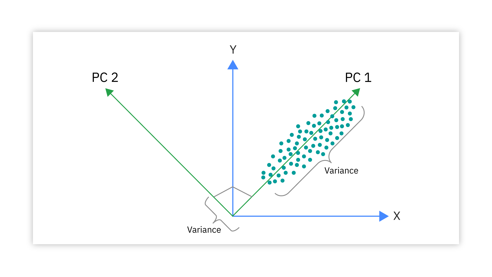
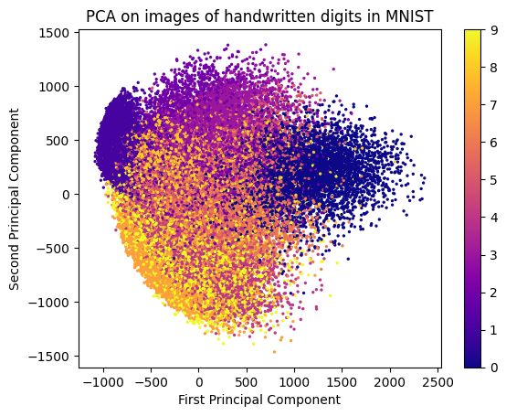
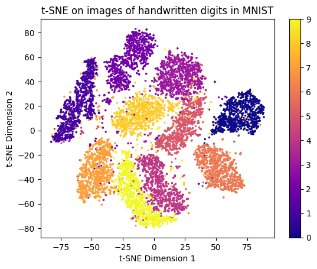

# import mnist
import tensorflow as tf
from tensorflow.keras import layers, models
# Load MNIST dataset
(x_train, y_train), (x_test, y_test) = tf.keras.datasets.mnist.load_data()Dimensionality Reduction
Dimensionality reduction is the process of reducing the number of random variables under consideration by obtaining a set of principal variables.

Although feature selection can also reduce the number of features in a dataset, dimensionality reduction typically involves transforming the data into a lower-dimensional space.
After the transformation, the new features are combinations of the original features, rather than a subset of them.
The transformed features are designed to retain as much information as possible from the original dataset, while reducing the number of dimensions.
For example, consider a dataset with two features: height and weight. A dimensionality reduction technique might transform these two features into a single feature that captures the most important information from both height and weight, such as:
\[ \text{new feature} = 0.7 \times \text{height} + 0.3 \times \text{weight} \]
This new feature would retain much of the information from the original two features, while reducing the dimensionality of the dataset from two to one.
In this notebook, we will explore some common techniques for dimensionality reduction, including principal component analysis (PCA), linear discriminant analysis (LDA), and t-distributed stochastic neighbor embedding (t-SNE). We will apply these techniques to a dataset and visualize the results to see how they can help us understand the structure of the data.
Principal Component Analysis (PCA)
Principal component analysis (PCA) is a technique for reducing the dimensionality of a dataset by projecting it onto a lower-dimensional subspace that captures the most important information in the data. PCA works by finding the principal components of the data, which are the directions in which the data varies the most. These principal components are orthogonal to each other and form a new coordinate system for the data.

PCA is commonly used for dimensionality reduction in machine learning, as it can help to reduce the computational complexity of the model and improve its performance. PCA is also useful for visualizing high-dimensional data in a lower-dimensional space, as it can reveal the underlying structure of the data and help to identify patterns and relationships.

In this notebook, we will apply PCA to a dataset and visualize the results to see how it can help us understand the structure of the data.
import numpy as np
encoded = [img.flatten() for img in x_train]
encoded = np.array(encoded)# import PCA from sklearn
from sklearn.decomposition import PCA
pca = PCA(n_components=2)
pca.fit(encoded)
reduced = pca.transform(encoded)
from matplotlib import pyplot as plt
plt.scatter(reduced[:,0], reduced[:,1], c=y_train, cmap='plasma', s=2)
plt.colorbar()
plt.xlabel('First Principal Component')
plt.ylabel('Second Principal Component')
plt.show()
In the above image, we can see how PCA has transformed the original high-dimensional data (28x28 pixel images of handwritten digits) into a lower-dimensional space (2D scatter plot). Each point in the scatter plot represents an image, and the colors indicate the different digit classes. PCA has effectively captured the variance in the data, allowing us to visualize the relationships between different digit classes in a 2D space.
Note that PCA is an unsupervised technique, meaning that it does not take into account the class labels of the data. As a result, the transformed features may not necessarily correspond to the original classes in a meaningful way. However, PCA can still be useful for visualizing the overall structure of the data and identifying patterns that may not be immediately apparent in the original high-dimensional space.
Evaluating PCA: Explained Variance Ratio
You can measure the effectiveness of PCA by looking at the explained variance ratio, which indicates how much variance is captured by each principal component.
A higher explained variance ratio means that the principal component captures more information from the original data.
pca.explained_variance_ratio_ array([0.09704664, 0.07095924])
sum(pca.explained_variance_ratio_)np.float64(0.16800588418808382)
The explained variance ratio for the first two principal components is approximately 0.097 and 0.071, respectively. This means that the first principal component captures about 9.7% of the total variance in the data, while the second principal component captures about 7.1% of the total variance.
The total explained variance for the first two principal components is approximately 0.168, or 16.8%. This means that by projecting the data onto the first two principal components, we are able to retain about 16.8% of the total variance in the original dataset.
t-Distributed Stochastic Neighbor Embedding (t-SNE)
t-Distributed Stochastic Neighbor Embedding (t-SNE) is a technique for dimensionality reduction that is commonly used for visualizing high-dimensional data in a lower-dimensional space. t-SNE works by finding a low-dimensional representation of the data that preserves the local structure of the data points.
t-SNE is useful for visualizing complex datasets that have a non-linear structure, as it can reveal patterns and relationships that are not apparent in the original data. t-SNE is commonly used for exploratory data analysis and for generating visualizations that help to understand the structure of the data.
In this notebook, we will apply t-SNE to a dataset and visualize the results to see how it can help us understand the structure of the data and identify patterns and relationships.
# import tsne
from sklearn.manifold import TSNE
tsne = TSNE(n_components=2)
reduced = tsne.fit_transform(encoded)
plt.scatter(reduced[:,0], reduced[:,1], c=y_test, cmap='plasma', s=2)
plt.colorbar()
plt.xlabel('t-SNE Dimension 1')
plt.ylabel('t-SNE Dimension 2')
plt.title('t-SNE on images of handwritten digits in MNIST')
plt.show();
t-SNE works by taking high-dimensional data and trying to create a 2D map where points that are similar stay close together.
It first measures how strongly each point “belongs” with others—like identifying who are close friends and who are strangers in high-dimensional space.
Then it places all points randomly in 2D and gradually moves them using attraction (pull) and repulsion (push) forces so that points with strong relationships end up near each other while unrelated points are pushed apart.
To avoid crowding everything together, t-SNE models distances in low dimensions using a special distribution (t-distribution) with heavy tails, helping clusters stay distinct.
-min.png)
The result is a visualization that preserves local neighborhoods and reveals meaningful clusters, even though the global axes themselves have no interpretable meaning.
Note that t-SNE is significantly more computationally intensive than PCA, especially for large datasets. Additionally, t-SNE is sensitive to hyperparameters such as perplexity and learning rate, which can affect the quality of the resulting visualization. Therefore, it is important to experiment with different hyperparameter settings to achieve the best results.
t-SNE unlike PCA is a non-linear dimensionality reduction technique. This means that t-SNE can capture complex relationships in the data that may not be well-represented by linear transformations. As a result, t-SNE is often more effective than PCA for visualizing high-dimensional data with non-linear structures.